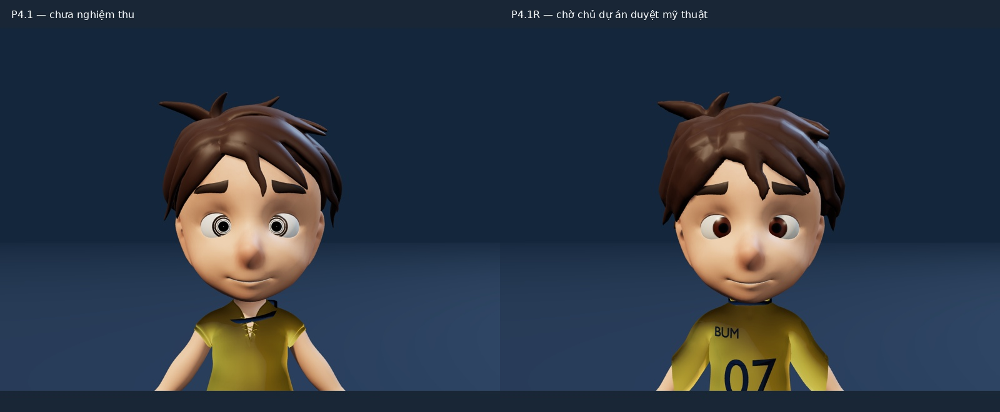
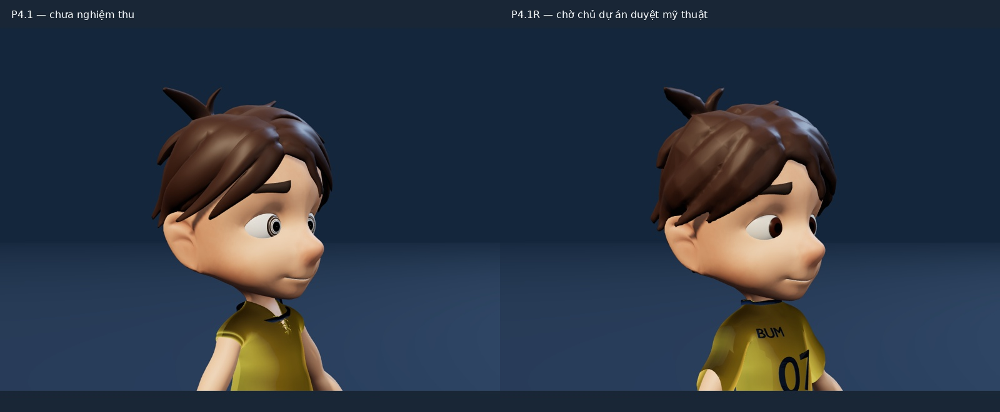
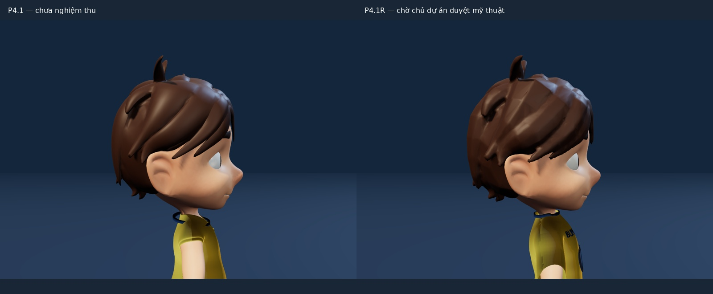
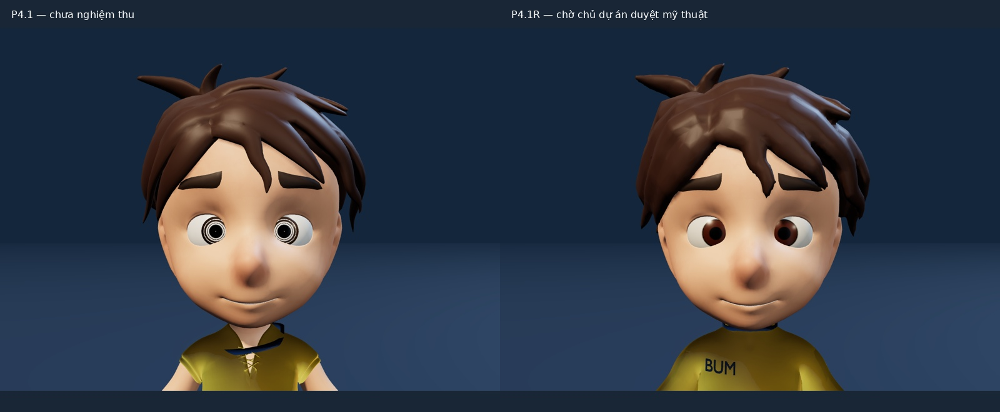
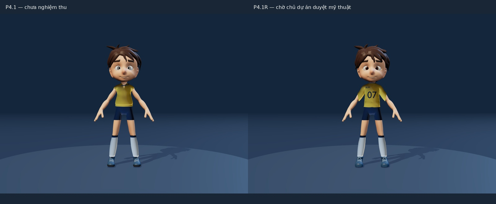
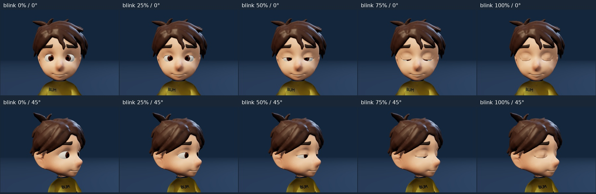
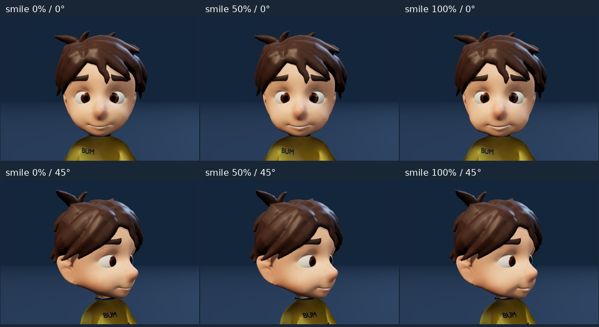
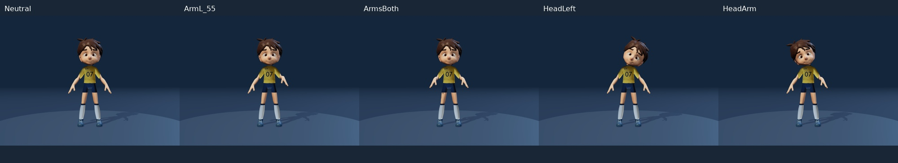

Scott / Mish7913 · CC BY4.0 · có chỉnh sửa. P4.1 bên trái, P4.1R bên phải; cùng camera và ánh sáng. Đây là renderGLB thực tế, không phải ảnh AI.
Báo cáo · PDF ảnh · Nguồn / giấy phép / thay đổi
Giữ370joints, đầy đủweights và DQS qua adapter nghiên cứu. Không tự công bố9/10. Linux WebKit/Chromium không phải iPhone thật.







